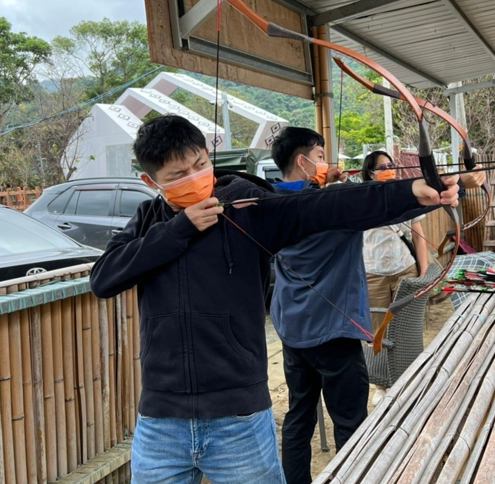
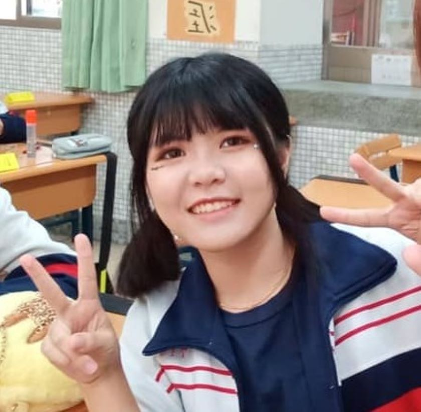
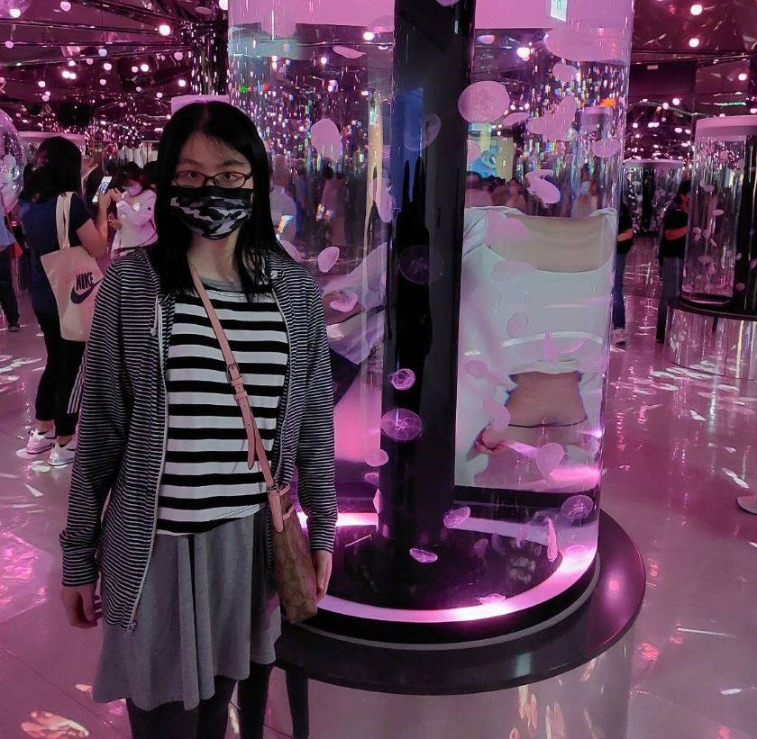

✮品牌理念✮
我們的明信片品牌致力於為顧客創造一個溫暖、有意義的聯繫方式。在這個日益快節奏的社會中，人與人之間的溝通往往變得冷漠和匆忙。而我們的明信片可以成為連接彼此的橋樑，為顧客帶來更多溫暖和關懷。我們的明信片不僅僅是一張紙片，它代表了大家的心意。我們的品牌核心價值是真摯和關懷，我們相信這種價值能夠感染更多人，讓他們更加關注自己和身邊的人。
✮網站成員✮
前端成員

11044247陳俊翊
這次做前端，我感受到前端工程師真的很強。我光是想要把整個網頁的排版做得好看就覺得十分困難，還有許多不同的CSS代碼要融會貫通地使用。再加上每個部分都要進行細微調整，他們還可以實現各種不同的特效。這讓我深深體會到，相對於前端，後端對我來說更容易一些。不過經過這次專題製作，我體會到沒有漂亮的前端設計，就不會有人被網頁吸引；沒有良好的程式功能，就沒有人願意使用。所以這兩者相輔相成，都是應該要了解的能力。
這次做前端，我感受到前端工程師真的很強。我光是想要把整個網頁的排版做得好看就覺得十分困難，還有許多不同的CSS代碼要融會貫通地使用。再加上每個部分都要進行細微調整，他們還可以實現各種不同的特效。這讓我深深體會到，相對於前端，後端對我來說更容易一些。不過經過這次專題製作，我體會到沒有漂亮的前端設計，就不會有人被網頁吸引；沒有良好的程式功能，就沒有人願意使用。所以這兩者相輔相成，都是應該要了解的能力。
11044251謝茗沂
在這學期做前端時真的是跟後端有很大的不同，上學期寫後端，幾乎是毫無頭緒，還要一直問，但寫了前端，基本上是都可以自己寫出來，覺得寫前端很快樂。也因為上學期有做過後端，所以其實這學期我們在做前端的時候都會常常想說這樣後端做不做得出來，是不是很難做，會想辦法找一個讓後端會比較好寫的方法，而不會造成之前我們自己在做後端時的困擾，但是也因為有些方法不同，也不太能確定後端是否有比較好寫。也要謝謝這次的組員，我覺得大家在不同的方面都有各自擅長的，所以互相幫助都蠻大的，最後謝謝老師和助教。
在這學期做前端時真的是跟後端有很大的不同，上學期寫後端，幾乎是毫無頭緒，還要一直問，但寫了前端，基本上是都可以自己寫出來，覺得寫前端很快樂。也因為上學期有做過後端，所以其實這學期我們在做前端的時候都會常常想說這樣後端做不做得出來，是不是很難做，會想辦法找一個讓後端會比較好寫的方法，而不會造成之前我們自己在做後端時的困擾，但是也因為有些方法不同，也不太能確定後端是否有比較好寫。也要謝謝這次的組員，我覺得大家在不同的方面都有各自擅長的，所以互相幫助都蠻大的，最後謝謝老師和助教。

11044228徐千惠
這一學期是做前端，雖然不管前端還是後端對我來說都很難，但是前端的話至少還是有些基本的東西我是可以做得出來的，我覺得前端不只考驗程式，更加考驗的是自己有沒有辦法想到好的排版，還有網頁的配色，要怎麼搭配才可以好看。好不容易寫出個大概後，加了些東西又全部跑版，找不到問題在哪時真的很崩潰，害我都不太敢亂加甚麼東西。有的網頁還加了許多特效，看了一下他們的程式碼好幾千條，我都覺得這也太厲害了吧，怎麼可以寫的這麼長，還排的這麼好又不跑版。所以不管是前端還是後端，我認為都有各自難的地方。
這一學期是做前端，雖然不管前端還是後端對我來說都很難，但是前端的話至少還是有些基本的東西我是可以做得出來的，我覺得前端不只考驗程式，更加考驗的是自己有沒有辦法想到好的排版，還有網頁的配色，要怎麼搭配才可以好看。好不容易寫出個大概後，加了些東西又全部跑版，找不到問題在哪時真的很崩潰，害我都不太敢亂加甚麼東西。有的網頁還加了許多特效，看了一下他們的程式碼好幾千條，我都覺得這也太厲害了吧，怎麼可以寫的這麼長，還排的這麼好又不跑版。所以不管是前端還是後端，我認為都有各自難的地方。
後端成員
11044110陳嘉唯
做完這次的專題，讓我更了解到如何寫出一個電商網頁，在這之中我也遇到很多問題，包括資料庫該如何建置，該從哪裡著手，在一開始我只列了應該有甚麼功能，在製作的過程中才知道製作過程是有順序的，所以我打掉重練，甚至到最後一周只做了計數器，這讓我好緊張。還好有前端的幫忙，讓我從一開始的不知所措，到慢慢上手，這一個過程讓我十分感謝幫助我的同學，讓我在完全沒有進度的情況下漸漸有了頭緒，也很慶幸自己沒有放棄。
做完這次的專題，讓我更了解到如何寫出一個電商網頁，在這之中我也遇到很多問題，包括資料庫該如何建置，該從哪裡著手，在一開始我只列了應該有甚麼功能，在製作的過程中才知道製作過程是有順序的，所以我打掉重練，甚至到最後一周只做了計數器，這讓我好緊張。還好有前端的幫忙，讓我從一開始的不知所措，到慢慢上手，這一個過程讓我十分感謝幫助我的同學，讓我在完全沒有進度的情況下漸漸有了頭緒，也很慶幸自己沒有放棄。

11044158葉姿妤
雖然上學期已經參與過專題製作，但這次負責網頁後端，對我來說真的是一大挑戰！要在短時間內學會課堂所學及實際應用真的很不容易，所幸在組員們的幫助下，讓我突破盲點，也感謝他們在我感到困惑時鼓勵我，讓我更有信心！
雖然上學期已經參與過專題製作，但這次負責網頁後端，對我來說真的是一大挑戰！要在短時間內學會課堂所學及實際應用真的很不容易，所幸在組員們的幫助下，讓我突破盲點，也感謝他們在我感到困惑時鼓勵我，讓我更有信心！
11044107胡文欣
這學期負責後端程式，跟上學期的前端相比，個人覺得真的難蠻多的，遇到的問題比想像中還要多，可能上一秒才剛解決一個問題下一秒又出現另一個問題，一個問題都會卡很久，找了很久都找不出原因真的會覺得很無助，但組員能夠幫我解決問題不管是前端的同學還是後端的同學真的很感謝他們，也很慶幸還好還有組員能夠幫助我。
這學期明顯花了比上學期還要多的時間跟心力，在做的過程真的數十次絕望、想放棄，但看到組員這麼努力我就告訴自己不能夠拖累大家，某位老師跟我說這就是在打基礎，確實，只要想藉由這個專題所學到的就是我的了，就比較有動力繼續做專題，我會繼續努力完成專題的！
這學期負責後端程式，跟上學期的前端相比，個人覺得真的難蠻多的，遇到的問題比想像中還要多，可能上一秒才剛解決一個問題下一秒又出現另一個問題，一個問題都會卡很久，找了很久都找不出原因真的會覺得很無助，但組員能夠幫我解決問題不管是前端的同學還是後端的同學真的很感謝他們，也很慶幸還好還有組員能夠幫助我。
這學期明顯花了比上學期還要多的時間跟心力，在做的過程真的數十次絕望、想放棄，但看到組員這麼努力我就告訴自己不能夠拖累大家，某位老師跟我說這就是在打基礎，確實，只要想藉由這個專題所學到的就是我的了，就比較有動力繼續做專題，我會繼續努力完成專題的！